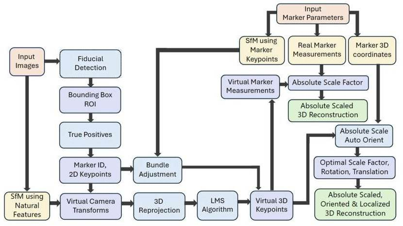
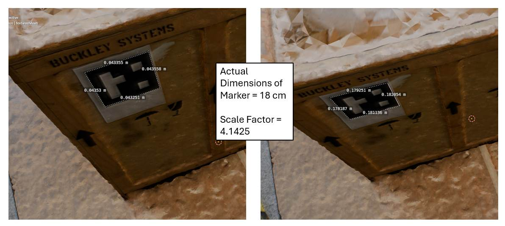
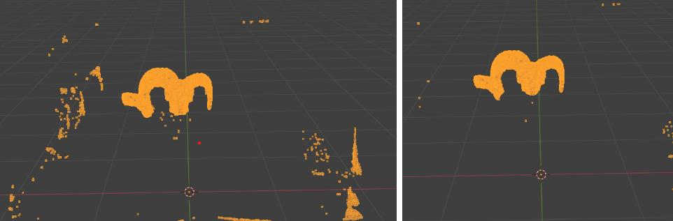

True-scale 3D from drones
problem
structure from motion rebuilds a scene but not its size, so a model made from drone photos has no real-world scale, and rescaling by hand is slow and error-prone. RASTER is the AIRL lab's absolute-scale pipeline (Lakshay Khurana and Dr. Suresh Sundaram), and my part, with a three-person capstone team, was the marker detection and the point-cloud subtraction.
what I built
- marker detection with YOLOv8 and cv2.aruco, feeding RASTER's absolute-scale step
- the end-to-end reconstruction: structure from motion in Meshroom alongside a CUDA-optimized NeRF (Nerfstudio), scaled by the ArUco markers
- synthetic training data from Unreal Engine 5, annotated automatically, with randomized markers, poses, lighting, blur and lens distortion
- 3D background subtraction (parallelized KD-Tree/FLANN and Octree) to pull an object out of a scene
- a real dataset shot with a DSLR, one image every 5 degrees around a crate carrying a marker (72 images per circle), plus Unreal-generated scenes
- ten rounds of detector training, using k-fold validation and synthetic scenes to hunt down false positives, and oriented bounding boxes instead of square ones
results
- detection reached 98.6% mAP@50 over 10 YOLOv8 + cv2.aruco pipelines
- absolute scale recovered within 0.2 cm on an 18 cm marker
- background subtraction on 10M-point clouds went from 27 h to 40 s (2,400x faster)
- on a synthetic room scene, a 0.1 distance threshold cleaned out the sparse stray points better than 0.01 and recovered the skull model


